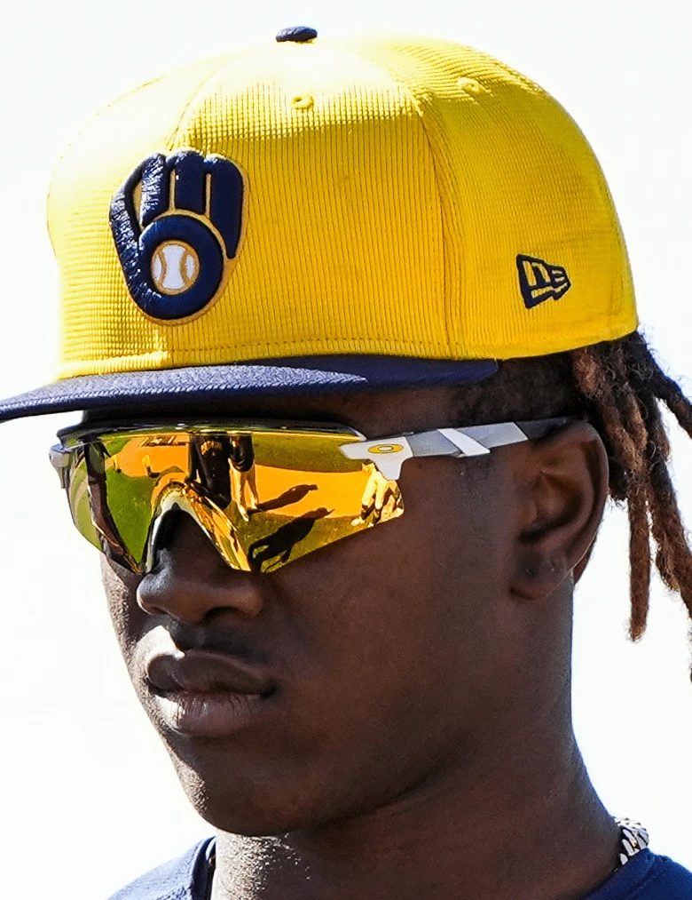

Pro scouting report · Prospect
Jesús Made
SS / 3B · Milwaukee Brewers organization
Report date Nov. 18, 2026
Scout Joel Janssen
Coverage 2026 season
- Bats / throws
- S / R
- Height / weight
- 6'1" / 221
- Born
- 05/08/2007
- Age
- 19
- Signed
- Jan. 2024 · IFA
- ETA
- 2027
- 2026 levels
- Double-A Biloxi (SOU) · Licey (Dominican Winter League)
- Positions played
- SS (primary, with Luis Peña at 3B) · 2B · 3B
Tool grades
20–80 · present / future| Tool | Pres | Fut | Comment |
|---|---|---|---|
| Hit | 50 | 60 | Quick hands from both sides; elite K% for Double-A |
| Power | 50 | 65 | HR 6 → 14 in a year; strength still coming |
| Run | 65 | 65 | 84 SB the last two years; true game-changing speed |
| Arm | 60 | 60 | Clocked at 100 mph across the infield |
| Field | |||
| at SS | 50 | 55 | Twitchy, rangy; consistency still developing |
| at 3B | 50 | 55 | Arm and reactions fit; likely long-term home |
| at 2B | 50 | 55 | Range and hands play; fallback option |
80 elite · 70 plus-plus · 60 plus · 50 average · 40 below · 30 well below · 20 poor
Projection
OFP / FV
70
Standing
MLB No. 1 · Brewers No. 1
Role
All-Star infielder, top-of-order switch-hitter
Alternate outcome
First-division 3B
Carrying tools
65 speed · 65 power · 60 hit
MLB Pipeline's No. 1 prospect in baseball since May 2026 (65 overall on its scale). Southern League All-Star at 19, about five years younger than the average Double-A player.
2026 performance
Minor League Baseball| Level | G | PA | AVG | OBP | SLG | 2B | 3B | HR | BB% | K% | SB-CS |
|---|---|---|---|---|---|---|---|---|---|---|---|
| Double-A Biloxi | 122 | 558 | .271 | .344 | .430 | 24 | 6 | 14 | 10.2% | 14.3% | 37-14 |
| Licey (LIDOM)* | 16 | 72 | .311 | .417 | .410 | 1 | 1 | 1 | 15.3% | 11.1% | 2-2 |
| Total | 138 | 630 | .275 | .352 | .428 | 25 | 7 | 15 | 10.8% | 14.0% | 39-16 |
Career: .286/.377/.442 with 112 stolen bases in 288 minor league games. 91 RBI at Biloxi broke Jackson Chourio's franchise single-season record. *Dominican Winter League, season in progress. Source: Baseball-Reference. Grades: MLB Pipeline, with run and power adjusted.
Report
Physical
Strong, athletic build at 6'1", 221, with more mass than most shortstops his age and none of the stiffness that usually comes with it. One of the twitchiest athletes in the minors: explosive first steps, quick hands and a fast-twitch swing from both sides. Already filled out, so the gains from here are strength and polish rather than size.
Hitting
Advanced bat-to-ball skills for any age, let alone 19 in Double-A. His 14.3% strikeout rate was among the lowest in the minors, and he walked at a 10% clip. Quick bat speed from both sides with nearly even platoon splits in 2025. The surface line (.271/.344/.430, about league average for the Southern League) undersells it given he was roughly five years younger than the competition. He has started the winter in Licey reaching base at a .417 clip.
Power
The tool on the rise. Six homers in 2024, six in 2025, then 14 in 2026 against older pitching, plus a home run in his first winter-league at-bat. He drove in 91 runs, a Biloxi record, and put together a nine-game RBI streak in May that was the longest in the minors at the time. With his strength and bat speed, more of his doubles turn into homers as he learns to lift, and 25-30 home runs is a realistic peak. That trend is why the future grade is 65, a step above Pipeline's 60.
Speed / baserunning
A 65 runner who uses it constantly: 47 steals in 2025, 37 more in 2026 and 112 in his minor league career. The 73% success rate at Biloxi (37 of 51) shows he is still learning to pick spots against better catchers, but the raw speed is game-changing. Takes extra bases and pressures infielders on every ground ball.
Defense
Played mostly shortstop at Biloxi, with Luis Peña sliding to third alongside him after Peña's August promotion. The range and 60 arm (clocked at 100 mph across the infield) fit at short, but routine-play consistency is still developing. With Cooper Pratt signed long term at shortstop in Milwaukee, third base is his most likely home, and his arm and reactions should make him above average there. Second base is also an option.
Makeup
Handled a full Double-A season at 19 with the pressure of being the No. 1 prospect in baseball and kept producing in big spots, including walk-off hits during his May RBI streak. Chose to play winter ball in the Dominican to keep developing ahead of a likely big league camp invite.
Health
No significant injuries. Missed about two days in June with a left quad contusion after a collision with a teammate and returned with a five-RBI doubleheader.
Summary
Made is the best prospect in baseball: a 19-year-old switch-hitter with 65 speed, a 60 arm, elite contact skills for his age and power that took a real step forward in 2026. He handled Double-A while being about five years younger than the league, broke a franchise RBI record and made the Southern League All-Star team. Whether he settles at shortstop or third base, the bat and legs make him an impact everyday player. As the power keeps growing, he projects as an All-Star at the top of the Brewers' lineup, likely starting 2027 at Triple-A Nashville with a big league debut close behind.